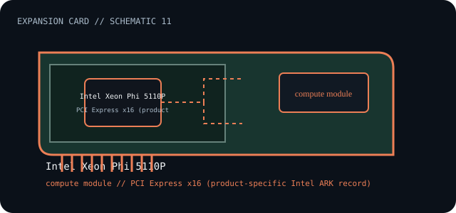

[ INDIVIDUAL COMPONENT // EXPANSION CARDS ]
Intel Xeon Phi 5110P
PCI Express coprocessor accelerator for workloads supported by the Intel Many Integrated Core software stack. This is a model-specific catalog entry; confirm the exact label and revision before use.

IDENTIFICATION: Match the full model/part number and board revision to the label. Port and bus information below is included only where the linked manufacturer or standards documentation supports it; revisions and platform support may differ.
Specifications and service checks
| Catalog subcategory | Compute accelerators |
|---|---|
| Exact model / part identifier | Intel Xeon Phi Coprocessor 5110P (ARK product 71992) |
| Bus / host interface | PCI Express x16 (product-specific Intel ARK record) |
| Verified interfaces / protocols | Compute coprocessor; no external I/O ports. Intel ARK lists 60 cores, 1.053 GHz base frequency and 8 GB on-card memory for this SKU. |
| OS / driver / firmware caveat | Legacy Intel Xeon Phi software stack, compiler, host driver and supported Linux distribution versions are essential; current OS support must not be assumed. Follow the 5110P thermal and power requirements in Intel documentation. |
| Service note | Record firmware, coprocessor software stack, host driver and compiler versions as a matched set. Verify chassis airflow, auxiliary power, and the exact card SKU before installation; do not substitute host CPU drivers. |
Installation and archival notes
- Record the board model, revision, serial/date code, firmware, bracket, accessories, and the documentation revision used to identify the unit.
- Confirm the host slot's electrical wiring/keying, required power, supported OS/driver, and any platform or option-ROM restriction in the cited model documentation.
- Use ESD precautions. Do not infer pinout, compatibility, protocol, boot support, or revision equivalence from a similar connector or product-family name.
Record firmware, coprocessor software stack, host driver and compiler versions as a matched set. Verify chassis airflow, auxiliary power, and the exact card SKU before installation; do not substitute host CPU drivers.
Model-specific sources
- Intel — Xeon Phi 5110P product specifications (ARK 71992)Exact SKU, host interface and published processor/memory specifications.
- Intel — Xeon Phi software documentation archiveSoftware environment and legacy driver/compiler context; check archived release-specific support.
Source links are selected for this exact model or its manufacturer-documented family. Review the source revision and your card's printed identifiers before service.